K096 PRESSURE SENSOR ON TRANSMISSION (GEARBOX BRIDGE)
- Path
- Electrical equipment > 3 CONNECTORS > K SENSORS AND SENDER UNITS > K096 PRESSURE SENSOR ON TRANSMISSION > K096 PRESSURE SENSOR ON TRANSMISSION (GEARBOX BRIDGE)
- Kind
- connector pinout (pin -> wire colour -> other end)
- Applies to
- engines: 1.2 8v; all production periods; only with equipment: Smart gearbox
- Interactive page
- https://sloeber94.github.io/elrnDB-fPnd/en/#/169003359
Applies to: engines: 1.2 8v; all production periods; only with equipment: Smart gearbox

Wiring | Colour |
|---|---|
NERO (black) |
Pin | Cable | Destination | |||
|---|---|---|---|---|---|
Sec.. | Colour | Node | Connect. | Pin | |
A | B (white) | X | B | ||
A | |||||
5 | |||||
B | R (red) | X | A | ||
B | |||||
16 | |||||
C | LR (blue with red stripe) | 6 | |||